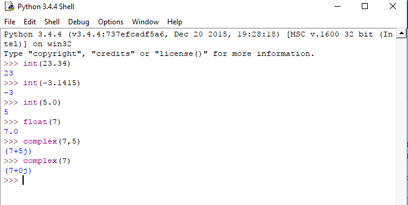
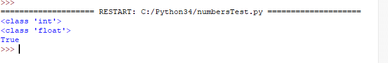
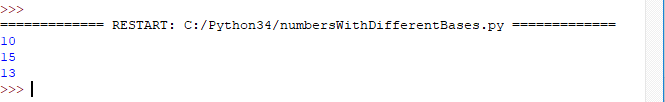
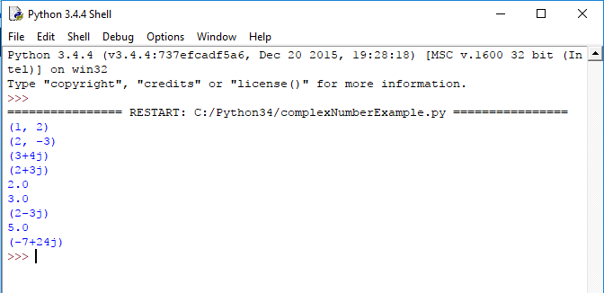

Python Numbers
Data types that store numeric values are called Number. If you change the value of a number data type, this results in a newly allocated object. So you can call numbers immutable.
We can simply create a number object by assigning some value to a variable. Also we can manipulate them as shown in below example.
#create two number objects var1=2 var2=3 # to print them print(var1) print(var2) #to delete one of them del var1 |
Different Numerical Type
Python supports four different data types.
- int – signed integers. Can hold both positive and negative value
- long – long integers. Similar like int. But range of this data type is unlimited
- float– floating point real values. Holds real numbers.
- complex– values of the form r+ij. Holds complex numerical values.
Python Numbers – Type Conversion
We can convert data types from one to another. This often is called type casting also. Here are some example.
- int(x) – converts x to a plain integer.
- long(x) – converts x to a long integer.
- float(x) – converts x to a floating point number.
- complex(x) – converts x to a complex number with real part x and imaginary part zero.
- complex(x,y) – converts x to a complex number with real part x and imaginary part y.
Here are some example of type casting.
python tutorial, python numbers type casting example
|  |
Determining type
We can also determine what type of numeric value one variable holds.
a = 25 # Output: print(type(a)) # Output: b=25.0 print(type(b)) # Output: True print(isinstance(b, float)) |
The above code, if we run it will produce following output.
python numbers, determining type of a variable example
|  |
Python Numbers with Prefix
In our day to day life we deal with decimal numbers(base 10). But in computer programs we may need to deal with numbers of other bases too like binary numbers(base 2), hexadecimal numbers(base 16), octal numbers(base 8) etc. We can represent these numbers with placing a prefix before the number like below-
# Output: 10 print(0b1010) # Output: 15 print(0xF) # Output: 13 print(0o15) |
This code will produce output like below. python numbers with different base example
|  |
More on Complex numbers
There are some built-in accessors and functions to support complex number in python. Take a look at the following code for better understanding.
# different complex numbers and their real and imaginary part complex1 = (1,2) print(complex1) complex2=(2,-3) print(complex2) complex3= 3+4j print(complex3) complex4=2+3j print(complex4) #some built-in accessors print(complex4.real) # gives the real part of a complex number print(complex4.imag) #gives the imaginary part of a imaginary number print(complex4.conjugate()) # gives the complex conjugate of a complex number #some built-in functions for complex numbers print(abs(complex3)) #gives the magnitude of a complex number print(pow(complex3,2)) #raise a complex number to a power |
The above code will produce the following output-
python complex numbers functions example output
|  |
« Previous Next »